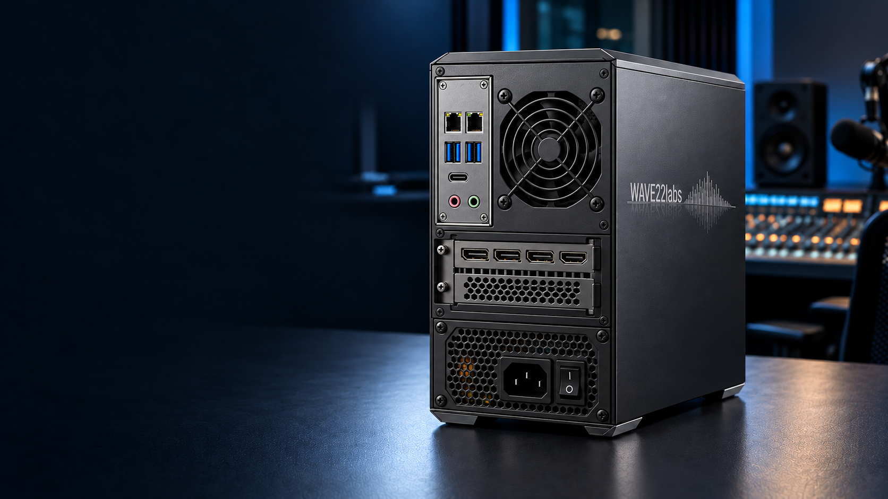

THE SOLUTION / STUDIO CONNECTIONS
Built around
your studio.
Local Hebrew captioning. A dedicated GPU.
Connections that belong in your studio.
LAN 01LAN 02
Hover or tap to explore the connections.
Hardware layout concept. Board, GPU, power supply and thermal fit remain to be validated. Display outputs are not broadcast video inputs.